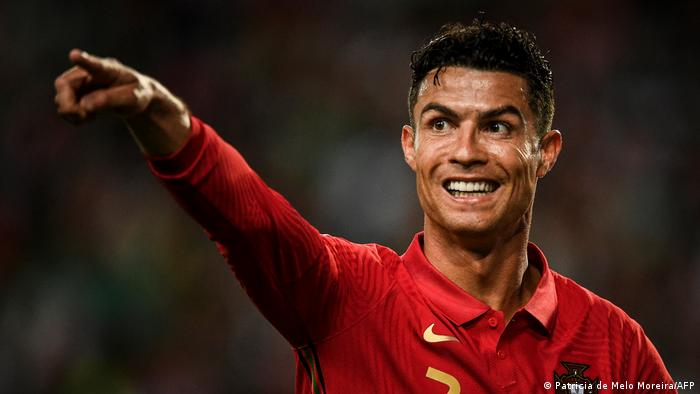
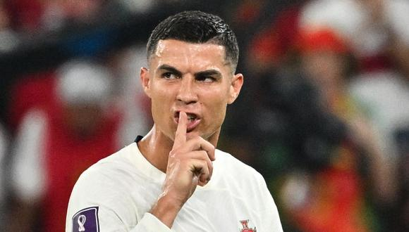
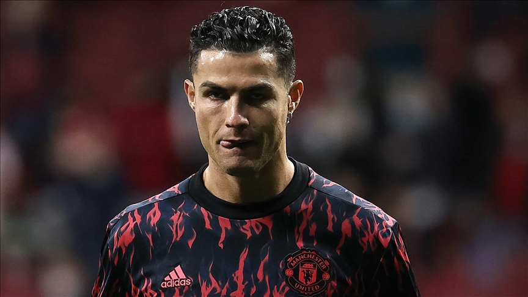
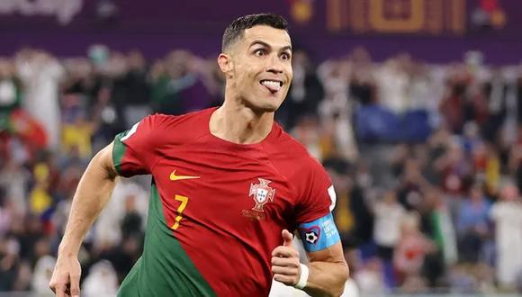
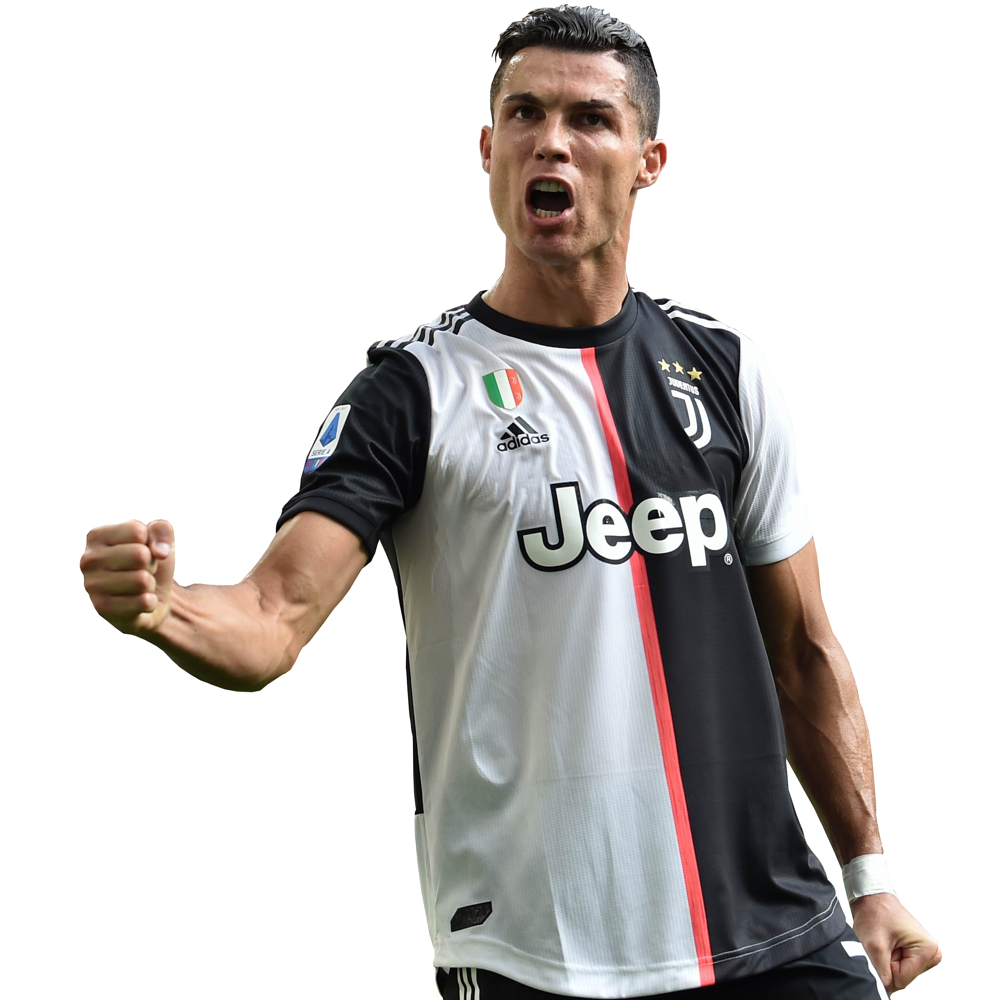

Imagenes




Descripcion

Cristiano Ronaldo
Cristiano Ronaldo Dos Santos Aveiro, es un futbolista portugués que juega como delantero y es considerado como uno de los mejores delanteros del mundo del fútbol. Nació en Funchal, Madeira el 5 de febrero de 1985 y es hijo de María Dolores dos Santos Aveiro y José Dinis Aveiro.